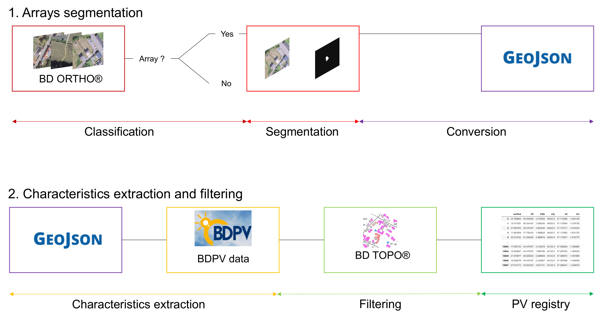
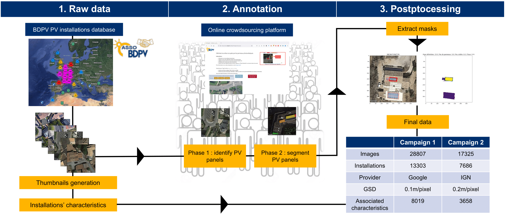

In this work, we propose a simple method based on aggregated PV registries to track the accuracy of our PV mapping pipeline over its whole mapping area. We call this method the downstream task accuracy as it enables practitioners to verify whether the data produced by the model is accurate or not, even when no labelled data is available. We apply this method on 9 French départements, covering an area of more than 50 000 sq. kilometers. Code is accessible on the project's Github and the data necessary to replicate the results is accessible on this Zenodo repository. The figure below summarizes the workflow of our mapping algorithm.

In this work, we propose a training dataset containing more than 28000 images, including 13000 annotated images of PV panels. We gathered this data through two crowdsourcing campaigns. Additionnally, we provide the installations' metadata associated to our segmentation masks. Finally, we release the raw annotations realized by the annotators. The dataset is available here and the raw annotations of the crowdsourcing campaign here. This work is currently under review for submission at Scientific Data. The following chart summarizes the dataset construction.
